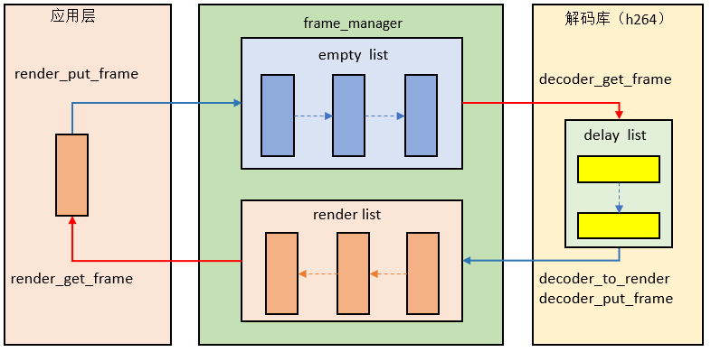

MPP Decoder 设计及接口说明
-
解码模块（H264、JPEG、PNG 等）：负责将码流数据解码成视频图像
-
输入码流数据管理模块（Packet manager）：负责视频、图片码流数据和 buffer 的管理
-
显示帧管理模块（Frame manager）：负责解码图像 buffer 的管理
Packet 管理机制
Packet manager 负责管理码流数据和 buffer。初始化时，该模块申请一块物理连续的内存（buffer 大小可由外部配置），用于存放视频/图片码流数据。
Packet manager 管理的数据单元为 packet，packet 表示一笔码流数据，它可以是完整的一帧数据，也支持不是完整的一帧数据。 每个 packet 与物理内存中的码流数据一一对应，它记录了每一笔码流的物理内存基地址、物理内存结束地址、物理内存偏移、虚拟内存地址、码流数据长度等信息。

packet 通过 empty list 和 ready list 两个链表进行管理。 其中，empty list 用于存放空闲的 packet，ready list 用于存放待解码的 packet。
送码流数据时，从 empty list 获取一个空闲 packet，填充数据后，再把 packet 放入 ready list；
解码前，解码器从 ready list 获取一个填充数据的 packet，使用完后再把该 packet 放入 empty list。

Frame 管理机制
Frame manager 负责管理图像 buffer。Frame manager 内部通过两个链表来管理图像 buffer：empty list 和 render list。 其中，empty list 存放可以给解码输出使用的图像 buffer，render list 存放解码完成但还未显示的图像 buffer。 在运行过程中，正在显示的图像 buffer 和用于参考的图像 buffer 可能不在这两个 list 中。
-
frame 状态迁移
初始化时，该模块申请指定个数的图像 buffer（个数可由外部配置），每个图像 buffer 的信息存放在内部数组中。 每个图像 buffer 有 4 种状态：-
Decoding: 该帧正在被解码器使用（用于解码输出或作为参考帧）
-
wait_render: 该帧在 render list 中，等待显示
-
Rendering: 该帧正在被显示占用
-
IDLE: 该帧处于空闲状态（既没有被显示占用，也没有被解码器用作参考帧）
其状态转移如下图所示：-
初始化时，所有图像 buffer 都在 empty list 中，此时处于 IDLE 状态；
-
解码模块从 empty list 链表头部获取一个空图像 buffer，此时 buffer 被解码模块占用，从 IDLE 状态变为 Decoding 状态;
-
解码完成后，解码模块还图像数据。此时分两种情况：
-
如果当前帧还未被显示，该帧加入 render list 链表尾部，从 Decoding 状态变为 wait render 状态；
-
该帧不再用做参考帧且已显示完成，此时该帧加入 empty list 链表尾部，由 Decoding 状态进入 IDLE 状态；
-
-
显示模块从 render list 链表头部取一帧图像，此时当前帧由 wait render 状态进入 Rendering 状态；
-
显示模块还图像 buffer，分两种情况：
-
如果当前帧不用于参考，此时由 Rendering 状态回到 IDLE 状态，该帧加入 empty list 链表尾部；
-
如果当前帧用于参考，此时由 Rendering 状态进入 Decoding 状态，该图像 buffer 不进入任何队列，等待解码器还参考帧；
-

图 3. frame 状态迁移 -
-
frame manager 调用流程
对于 JPEG、PNG 这类没有参考帧概念的编码格式，每一帧的状态是唯一的，解码后的数据帧可直接送 render list

图 4. frame manager 调用流程（JPEG/PNG） 但对于 H264 这类有参考帧的编码格式，解码后的视频帧可能既被显示占用也会被解码器用作参考帧，并且由于双向参考帧的存在， 视频帧需要重排序后才能送显示。 不同于 JPG，H264 解码库内部存在一个 delay list 用于为显示帧重排序。
图 5. frame manager 调用流程（H264）
物理连续内存使用情况
H264 解码所需的物理连续内存如下所示：
| 内存占用模块 | 计算方式 | 说明 |
|---|---|---|
| 输入码流 | - | 大小由应用层配置 |
| 输出帧 | width*height*3/2*frame_num |
frame_num 至少需要（参考帧个数+1）个
显示占用个数可由应用层通过 struct decode_config
结构体中的 extra_frame_num 配置
|
| 帧内预测(需要上一行数据) |
帧格式：width*2
MBAFF：width*4
| - |
| 宏块信息 | 固定 12K | - |
| dblk 模块(上一个宏块行最后 4 行数据) |
帧格式：width*8
MBAFF：width*16
| - |
| co-located 信息 | 固定 68K | - |
| 每一帧 co-located 数据缓存 |
(width/16)*(height/16)*32*frame_num
| - |
co-located 两个 buffer，I、P 帧解码时会往 buffer 里写数据，B 帧解码时从 buffer 读数据。 如果当前码流中没有 B 帧，这两块内存也需要申请。
MPP Decoder 调用流程
- 在调用 MPP Decoder 的解码函数时，解码模块从 Packet manager 取一笔码流，同时从 Frame maneger 取一个空闲图像 buffer，对码流进行解码 并输出图像到图像 buffer。
- 解码后，解码模块将码流 buffer 归还 Packet manager，将解码图像 buffer 归还 Frame maneger。
-
为保证解码效率，建议调用者创建 3 个线程实现解码功能：
- send data thread
通过 mpp_decoder_get_packet 和 mpp_decoder_put_packet 这两个接口把码流数据送到 packet 管理模块
- decode thread
通过调用 mpp_decoder_decode 控制解码，解码库从 packet 管理模块取一笔码流数据，解码完成后，将视频帧送入 frame 管理模块
- render thread
通过 mpp_decoder_get_frame 和 mpp_decoder_put_frame 两个接口从 frame 管理模块获取视频帧，并控制该帧显示时机

图 6. mpp_decoder 调用流程
- send data thread
MPP Decoder 数据结构
-
struct decode_config
struct decode_config { enum mpp_pixel_format pix_fmt; // output pixel format int bitstream_buffer_size; // bitstream buffer size in pm int packet_count; // packet number in pm int extra_frame_num; // extra frame number in fm };decode_config结构体用于配置解码器初始化使用的参数。-
pix_fmt 表示解码输出的颜色格式
-
bitstream_buffer_size 表示存放输入码流缓存的总长度
-
packet_count 表示 packet manager 中 packet 的最大个数
-
extra_frame_num 表示解码器额外分配的帧个数，主要用于缓存显示帧以保证显示平滑。
-
-
struct mpp_packet
struct mpp_packet { void *data; int size; long long pts; unsigned int flag; };mpp_packet结构体用于表示输入码流信息。-
data 表示码流数据存放的起始地址
-
size 表示该笔码流数据长度
-
pts 表示该笔码流的时间戳
-
flag 表示该笔码流的标记位，目前仅用于确定该码流是否为最后一笔码流（PACKET_FLAG_EOS）
-
-
struct mpp_frame
struct mpp_size { int width; int height; }; struct mpp_rect { int x; int y; int width; int height; }; enum mpp_buf_type { MPP_DMA_BUF_FD, MPP_PHY_ADDR, }; struct mpp_buf { enum mpp_buf_type buf_type; union { int fd[3]; unsigned int phy_addr[3]; }; unsigned int stride[3]; struct mpp_size size; unsigned int crop_en; struct mpp_rect crop; enum mpp_pixel_format format; unsigned int flags; };-
buf_type：表示 mpp_buf 类型，以 fd 方式 MPP_DMA_BUF_FD 或 以物理地址方式 MPP_PHY_ADDR；
-
fd[3]：表示 buffer 三个分量的 fd
-
phy_addr[3]：表示 buffer 三个分量的物理地址
-
stride[3]：表示 buffer 三个分量的 stride
-
size：表示 buffer 的宽、高
-
crop_en： 表示该 buffer 是否需要 crop
-
crop：表示该 buffer 的 crop 信息
-
format： 表示该 buffer 的颜色格式类型
struct mpp_frame { struct mpp_buf buf; long long pts; unsigned int id; unsigned int flags; };-
buf：表示 mpp_frame 的 buffer 信息
-
pts：表示 mpp_frame 的时间戳
-
id：表示 mpp_frame 的唯一标识
-
flags：表示 mpp_frame 的标志位
-
-
enum mpp_dec_errno
enum mpp_dec_errno { DEC_ERR_NOT_SUPPORT = 0x90000001, DEC_ERR_NO_EMPTY_PACKET = 0x90000002, // no packet in empty list DEC_ERR_NO_READY_PACKET = 0x90000003, // DEC_ERR_NO_EMPTY_FRAME = 0x90000004, // DEC_ERR_NO_RENDER_FRAME = 0x90000005, // DEC_ERR_NULL_PTR = 0x90000006, DEC_ERR_FM_NOT_CREATE = 0x90000006, };-
DEC_ERR_NOT_SUPPORT：该码流不支持
-
DEC_ERR_NO_EMPTY_PACKET：packet manager 中缺少空闲的 packet，可能是解码速度小于送 packet 速度，此时需要等待一段时间；
-
DEC_ERR_NO_READY_PACKET：packet manager 中缺少填好码流数据的 packet，可能是送 packet 速度小于解码速度，此时需要等待一段时间；
-
DEC_ERR_NO_EMPTY_FRAME：frame manager 中缺少空闲的 frame，表示所有帧都处于使用状态，通常是解码速度大于显示速度导致，此时需要等待一段时间；
-
DEC_ERR_NO_RENDER_FRAME：frame manager 中缺少待显示的 frame，表示所有帧都处于空闲状态，通常是解码速度小于显示速度导致，此时需要等待一段时间；
-
DEC_ERR_NULL_PTR：表示接口函数输入参数存在空指针
-
DEC_ERR_FM_NOT_CREATE：表示在获取待显示 frame 时 frame manager 还未创建
-
-
enum mpp_codec_type
enum mpp_codec_type { MPP_CODEC_VIDEO_DECODER_H264 = 0x1000, // decoder MPP_CODEC_VIDEO_DECODER_MJPEG, MPP_CODEC_VIDEO_DECODER_PNG, MPP_CODEC_VIDEO_ENCODER_H264 = 0x2000, // encoder };mpp_codec_type 枚举类型表示支持的编解码格式。
-
enum mpp_dec_cmd
enum mpp_dec_cmd { MPP_DEC_INIT_CMD_SET_EXT_FRAME_ALLOCATOR, // frame buffer allocator MPP_DEC_INIT_CMD_SET_ROT_FLIP_FLAG, MPP_DEC_INIT_CMD_SET_SCALE, MPP_DEC_INIT_CMD_SET_CROP_INFO, MPP_DEC_INIT_CMD_SET_OUTPUT_POS, };-
MPP_DEC_INIT_CMD_SET_EXT_FRAME_ALLOCATOR：表示由外部设置帧 buffer 分配器
-
MPP_DEC_INIT_CMD_SET_ROT_FLIP_FLAG: 表示设置旋转、镜像后处理，只用于 JPEG
-
MPP_DEC_INIT_CMD_SET_SCALE： 表示设置缩放系数，只用于 JPEG
-
MPP_DEC_INIT_CMD_SET_CROP_INFO：表示设置输出 crop 信息
-
MPP_DEC_INIT_CMD_SET_OUTPUT_POS：表示设置解码图像在输出缓存的位置
-
MPP Decoder 接口设计
接口如下 :
struct decode_config {
enum mpp_pixel_format pix_fmt; // output pixel format
int bitstream_buffer_size; // bitstream buffer size in pm
int packet_count; // packet number in pm
int extra_frame_num; // extra frame number in fm
};
struct mpp_decoder* create_mpp_decoder(enum mpp_codec_type type);
void destory_mpp_decoder(struct mpp_decoder* decoder);
int mpp_decoder_init(struct mpp_decoder *decoder, struct decode_config *config);
int mpp_decoder_decode(struct mpp_decoder* decoder);
int mpp_decoder_control(struct mpp_decoder* decoder, int cmd, void *param);
int mpp_decoder_reset(struct mpp_decoder* decoder);
int mpp_decoder_get_packet(struct mpp_decoder* decoder, struct mpp_packet* packet, int size);
int mpp_decoder_put_packet(struct mpp_decoder* decoder, struct mpp_packet* packet);
int mpp_decoder_get_frame(struct mpp_decoder* decoder, struct mpp_frame* frame);
int mpp_decoder_put_frame(struct mpp_decoder* decoder, struct mpp_frame* frame);
| 函数原型 | struct mpp_decoder* mpp_decoder_create(enum mpp_codec_type type) |
|---|---|
| 功能说明 | 创建 mpp_decoder 对象 |
| 参数定义 | type: 解码器类型 |
| 返回值 | mpp_decoder 对象 |
| 注意事项 | - |
| 函数原型 | void mpp_decoder_destory(struct mpp_decoder* decoder) |
|---|---|
| 功能说明 | 销毁 mpp_decoder 对象 |
| 参数定义 | decoder: mpp_decoder 对象 |
| 返回值 | 无 |
| 注意事项 | - |
| 函数原型 | int mpp_decoder_init(struct mpp_decoder *decoder, struct decode_config *config) |
|---|---|
| 功能说明 | 初始化解码器 |
| 参数定义 |
decoder: mpp_decoder 对象
config：解码器的配置参数
|
| 返回值 |
0:成功
<0:失败
|
| 注意事项 | - |
| 函数原型 | int mpp_decoder_decode(struct mpp_decoder* decoder) |
|---|---|
| 功能说明 | 解码一笔数据 |
| 参数定义 | decoder: mpp_decoder 对象 |
| 返回值 |
0:成功
<0:失败
|
| 注意事项 | - |
| 函数原型 | int mpp_decoder_control(struct mpp_decoder* decoder, int cmd, void* param) |
|---|---|
| 功能说明 | 向 mpp_decoder 对象发送控制命令 |
| 参数定义 |
decoder: mpp_decoder 对象
cmd: 控制命令类型
param: 控制参数
|
| 返回值 |
0:成功
<0:失败
|
| 注意事项 | - |
| 函数原型 | int mpp_decoder_reset(struct mpp_decoder* decoder) |
|---|---|
| 功能说明 | 重置 mpp_decoder 对象 |
| 参数定义 |
decoder: mpp_decoder 对象
|
| 返回值 |
0:成功
<0:失败
|
| 注意事项 | - |
| 函数原型 | int mpp_decoder_get_packet(struct mpp_decoder* decoder, struct mpp_packet* packet, int size) |
|---|---|
| 功能说明 | 获取一个写码流数据的 packet |
| 参数定义 |
decoder: mpp_decoder 对象
packet:码流数据结构指针
size:上层应用申请 packet 的 buffer 大小
|
| 返回值 |
0:成功
<0:失败
|
| 注意事项 | - |
| 函数原型 | int mpp_decoder_put_packet(struct mpp_decoder* decoder, struct mpp_packet* packet) |
|---|---|
| 功能说明 | 归还码流数据的 packet 对象 |
| 参数定义 |
decoder: mpp_decoder 对象
packet:码流数据结构指针
|
| 返回值 |
0:成功
<0:失败
|
| 注意事项 | - |
| 函数原型 | int mpp_decoder_get_frame(struct mpp_decoder* decoder, struct mpp_frame* frame) |
|---|---|
| 功能说明 | 获取一个视频帧对象 |
| 参数定义 |
decoder: mpp_decoder 对象
frame:视频帧数据结构指针
|
| 返回值 |
0:成功
<0:失败
|
| 注意事项 | - |
| 函数原型 | int mpp_decoder_put_frame(struct mpp_decoder* decoder, struct mpp_frame* frame) |
|---|---|
| 功能说明 | 归还视频帧对象 |
| 参数定义 |
decoder: mpp_decoder 对象
frame:视频帧数据结构指针
|
| 返回值 |
0:成功
<0:失败
|
| 注意事项 | - |
MPP Decoder 参考 Demo
//* 1.创建 mpp_decoder 对象 struct mpp_decoder* dec = mpp_decoder_create(type); struct decode_config config; config.bitstream_buffer_size = (file_len + 1023) & (~1023); config.extra_frame_num = 0; config.packet_count = 1; config.pix_fmt = MPP_FMT_ARGB_8888; //* 2. 初始化 mpp_decoder mpp_decoder_init(dec, &config); //* 3. 获取一个空的 packet struct mpp_packet packet; memset(&packet, 0, sizeof(struct mpp_packet)); mpp_decoder_get_packet(dec, &packet, file_len); //* 4. 把视频码流数据拷贝到 packet fread(packet.data, 1, file_len, fp); packet.size = file_len; packet.flag = PACKET_FLAG_EOS; //* 5. 归还 packet mpp_decoder_put_packet(dec, &packet); //* 6. 解码该笔码流数据 mpp_decoder_decode(dec); //* 7. 获取解码后视频帧数据 struct mpp_frame frame; memset(&frame, 0, sizeof(struct mpp_frame)); mpp_decoder_get_frame(dec, &frame); //* 8. 显示该视频帧 // render_frame... //* 9. 归还该视频帧 mpp_decoder_put_frame(dec, &frame); //* 10. 销毁 mpp_decoder mpp_decoder_destory(dec);
接口设计
输出 JPEG 图片的缓存 buffer 由调用者申请，但调用者并不知道编码后图片的实际大小， 为避免 VE 写输出数据时越界，该 buffer 需要预先申请较大的内存。
| 函数原型 | int mpp_encode_jpeg(struct mpp_frame* frame, int quality, int dma_buf_fd, int buf_len, int* len) |
|---|---|
| 功能说明 | 编码一帧 JPEG 图片 |
| 参数定义 |
frame: 待编码的原始 YUV 数据
quality: 编码质量，取值范围 1~100，1 表示编码图片质量最差，100 表示最好
dma_buf_fd：输出 JPEG 图片存放的 dma-buf fd
buf_len：输出 JPEG 图片 dma-buf 的长度
len: 输出 JPEG 图片的真实大小
|
| 返回值 |
0: 成功
<0:失败
|
| 注意事项 | - |